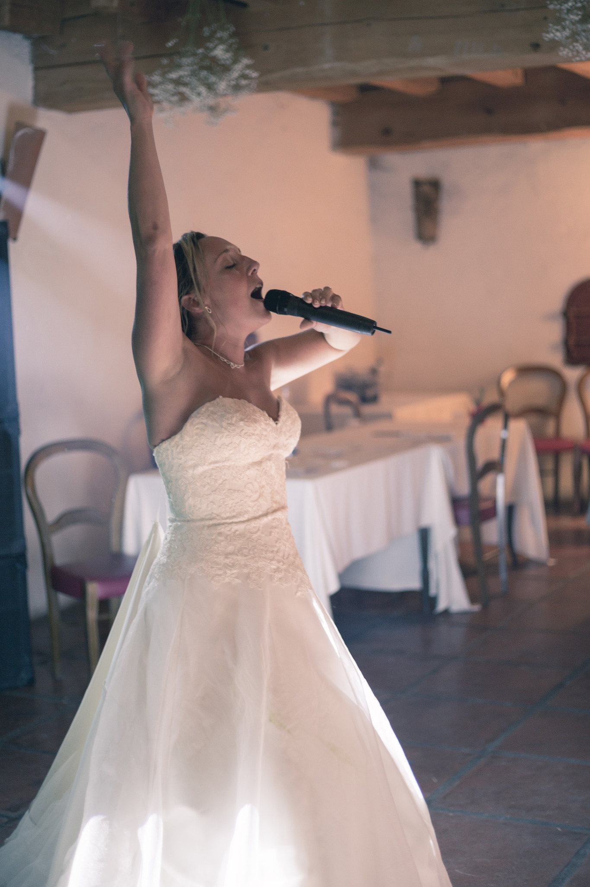
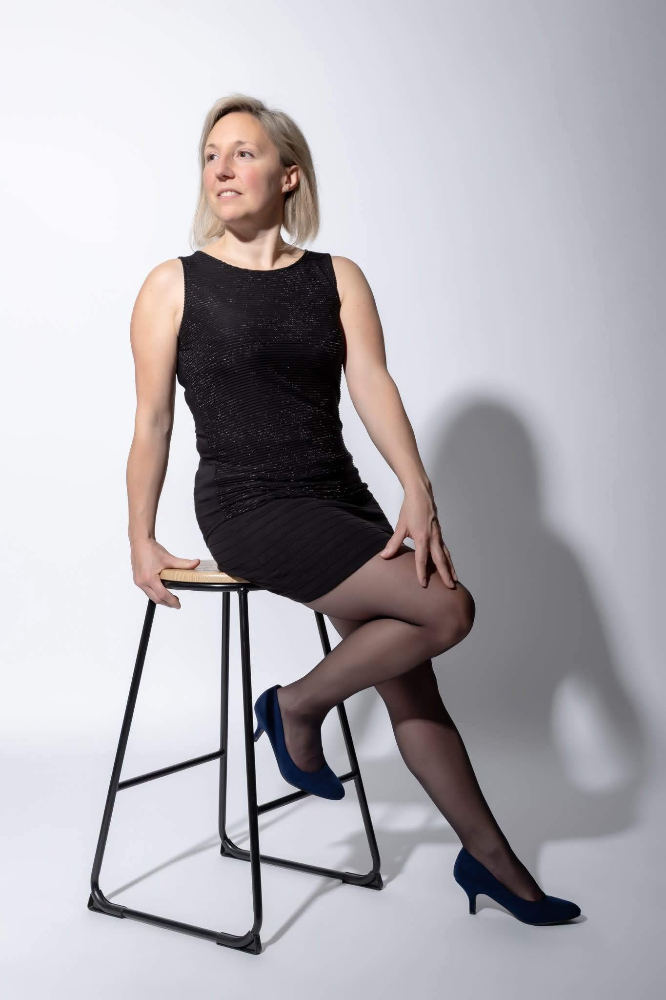
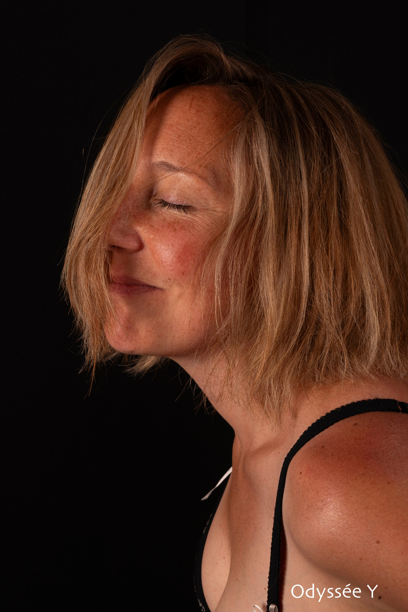

TRUE COLORS
une aventure unique.
Ici, ta vie n'est pas un problème à résoudre, ni une montagne à gravir.
Elle est TA CRÉATION SIGNATURE.
L'art et la maîtrise du mouvement pour une vie Signature.
Entrer dans le CentreUn Centre vivant
Une invitation à vivre l'immensité de qui TU ES.
Un Centre vivant où tu es invité à découvrir, explorer et vivre l'immensité de qui tu es, au cœur de ta réalité.
Chaque mouvement, chaque rencontre, chaque expérience devient une invitation à te révéler et à grandir.
Quatre Portes · Quatre expériences singulières
Quelle Porte t'appelle ?
Chaque Porte possède sa propre entrée. Aucun parcours imposé.
Immersion collective
TAPIS ROSE
3 jours pour découvrir l'impact organique de ta Présence.
Elle ne suit pas une voie. Elle la révèle en se vivant.
Vortex individuel
NOW
Ton Vortex d'Accompagnement Signature.
Incarne pleinement qui TU ES, dans tous les domaines de ta vie.
Business Signature
NAV’IN YOU
Ton Vecteur Business Signature.
L'art et la maîtrise du mouvement au cœur de ton Œuvre.
Événement Signature
LA CERISE
Là où TOUT SE REJOINT.
Un Événement Signature qui prend vie en instant T.
Première Porte
TAPIS ROSE
3 jours pour découvrir l'impact organique de ta Présence.
« Elle ne suit pas une voie. Elle la révèle en se vivant. »
Et si tu découvrais ce que ta Présence met naturellement en mouvement ?
Tu n'as pas besoin de devenir quelqu'un d'autre pour vivre une expérience nouvelle de TOI.
TAPIS ROSE t'invite à découvrir et ressentir ce qui se révèle lorsque tu te vis pleinement, sans chercher à suivre une voie déjà tracée.
Pas besoin de sortir de ton quotidien. C'est précisément au cœur de ta réalité que l'expérience prend vie.
Une immersion de trois jours, à ton rythme
Pendant trois jours, tu entres dans un espace collectif où chaque personne bénéficie d'un accompagnement individuel. Tu continues à vivre tes journées, tes relations, tes activités et tu explores ce que tes propres mouvements te donnent à découvrir.
Des invitations à expérimenter · Des propositions spontanées pour découvrir de nouvelles expressions de TOI.
Mes transmissions · Des audios et des supports immersifs.
Partage & Célébration · Un espace pour partager, célébrer ce qui prend vie, où ta Présence fait déjà tout.
SHIFT & Ressourcement · Deux espaces complémentaires pour traverser tes mouvements, te retrouver et recevoir.
Format : immersion collective · Durée : 3 jours · Lieu : espace Telegram privé · Participation : 44 €
Pour découvrir la prochaine immersion TAPIS ROSE, retrouve nos annonces sur nos réseaux sociaux.
Trois jours qui peuvent tout changer. Dis-toi OUI.
Deuxième Porte
NOW
Ton Vortex d'Accompagnement Signature
Incarne pleinement qui TU ES, dans tous les domaines de ta vie.
Et si ta vie devenait l'expression vivante de qui TU ES ?
Tu n'as pas besoin de devenir une meilleure version de toi-même. NOW t'invite à vivre qui TU ES déjà, dans chaque cellule de ton corps physique.
Un Vortex Signature qui prend forme autour de TOI pour t'accompagner à te mettre en mouvement en douceur et fluidité, pour te révéler en sérénité de l'intérieur.
Chaque mouvement ouvre de nouvelles possibilités de te reconnaître, de te ressentir et de t'exprimer en totale sécurité.
Trois espaces vivants
Mes transmissions · Audios personnalisés, invitations et mises en mouvement.
Partage & Célébration · Partager tes découvertes et célébrer ce qui prend vie.
SHIFT · Retrouver ton centre, ton axe et la liberté de ton mouvement en instant T.
Deux façons de vivre NOW
À la séance : En visio, pour accompagner un passage, découvrir et intégrer un nouvel aspect de TOI qui porte ses propres arts et médecines sacrées. Une intégration qui se déploie sur trois jours. Tarif : 150 €.
Au mois : Un Vortex individuel sur mesure, sur Telegram, avec des transmissions et partages cinq jours sur sept, une visio hebdomadaire pour accompagner l'intégration et verrouiller chaque palier au cœur même de ton quotidien. Tarif : 1 200 €.
T'aimer sans rien laisser de côté.
Quatrième Porte
LA CERISE
Là où TOUT SE REJOINT.
Un Événement Signature qui prend vie en instant T.
Et si la vie te réservait LA CERISE ?
Une rencontre, une invitation, une expérience à vivre. Chaque événement émerge le moment venu et possède sa propre identité, son propre mouvement, sa propre expression.
Il peut réunir différents créateurs, intervenants, univers et expériences. Rien n'est figé. Tout se crée à partir de ce qui demande à prendre vie.
LA CERISE peut prendre mille formes
La Cerise sur le Business · Un séminaire Signature avec d'autres intervenants.
La Cerise sur la Famille · Une expérience parent-enfant, faite de retrouvailles et d'activités Signature.
La Cerise sur le Couple · Un week-end à deux ponctué d'invitations.
La Cerise rien que pour TOI · Une expérience à t’offrir.
Les dates, lieux et modalités seront annoncés au fil de l'émergence de chaque événement. Aucun calendrier fixe n'est imposé.
La rencontre
Moi, c'est Diane.
Je suis la Source en mouvement.
Et TRUE COLORS est mon Œuvre sur Terre.
Tu es la Source en mouvement et Le Centre TRUE COLORS est une Porte pour t’accompagner à ton rythme à te souvenir.
Elle est belle ma vie.

Elle est pleine de bleus, de bosses, de fausses notes (enfin c’est ce que je croyais !), de rencontres exceptionnelles, de moments rares, elle est riche ma vie !
Du mouvement dans tous les domaines, dans tous les secteurs, dans tous les coins de France, du Monde et des Multivers !
Du cœur dans TOUT et pour TOUT.
De l’amour, de la passion, du feu, trop fort, coupé, camouflé !
Des peurs, des hésitations, des doutes, des costumes, pleins !!!
Des erreurs ?!
Non. Des expériences, toutes UNIQUES, toutes SACRÉES.
Elles m’ont accompagné à ME DÉCOUVRIR, ME RESSENTIR, M’EXPRIMER SOUS TOUTES MES COULEURS, M’AIMER SANS AUCUNE LIMITE, À OSER INCARNER MA VÉRITÉ SOUS TOUTES MES FACETTES et je vais te dire, ce n’est que le début !

Chaque jour est un nouveau commencement. Chaque respiration un nouveau mouvement. Chaque seconde un INSTANT PRÉSENT.
C’est ça TRUE COLORS, une MULTIDIMENSION où tu réalises qu’être TOI est NORMAL et que cette NORME est sacrément contagieuse.
Alors oui il y a un tas de termes qui ne te sont peut-être pas encore familiers parce que peut-être que le seul espace où tu ne t’es jamais autorisé à te rendre c’est en toi.
Ici, peu importe le reste autour, les étiquettes, les croyances, les limites ou les histoires passées.
C’est TOI qui décide qui TU ES, ce que tu veux VIVRE pour TOI maintenant.
TOUT LE VIVANT accompagne, soutient et révèle TON MOUVEMENT dans ta réalité matière.
Une orchestration DIVINE dont tu fais déjà partie intégrante.
Depuis le cœur de tes cellules, TOUT EST POSSIBLE.
Je te partage ici quelques photos de talentueux photographes qui m’ont permis de me VOIR VRAIMENT à des moments de ma vie où j’aurais préféré rester cachée.
Parce qu’il y a un regard qui ne trompe jamais : LE NÔTRE. Et parfois, il a juste besoin d’éclairage, de Présence et surtout beaucoup d’AMOUR.

C’est à ce point de rencontre-là que je te retrouve de TOI à TOI en TOI.
Diane.